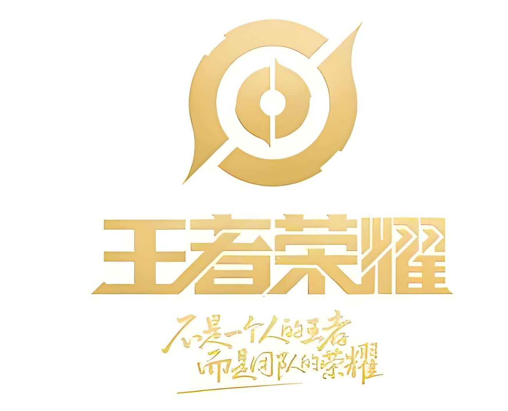
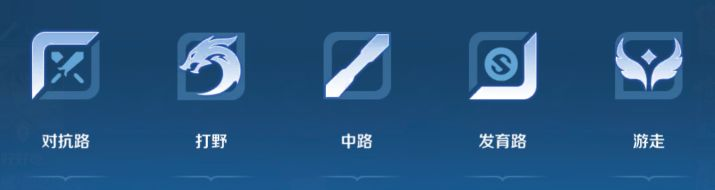
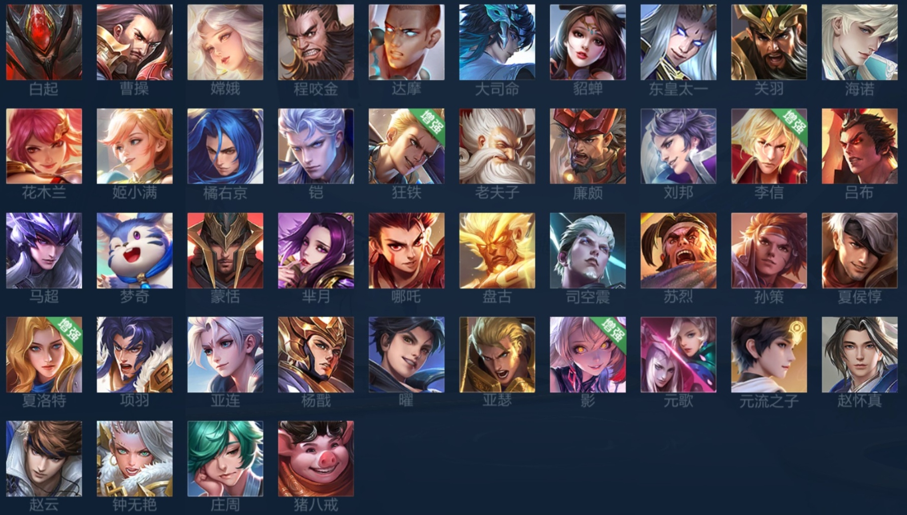
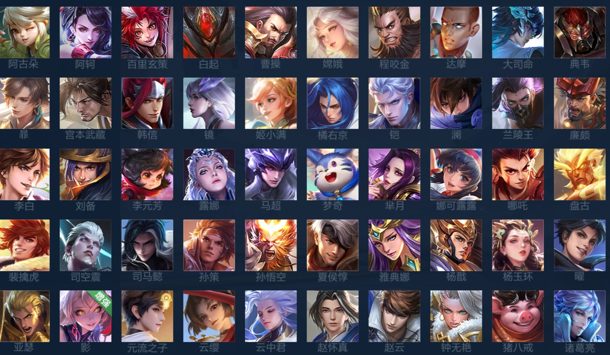
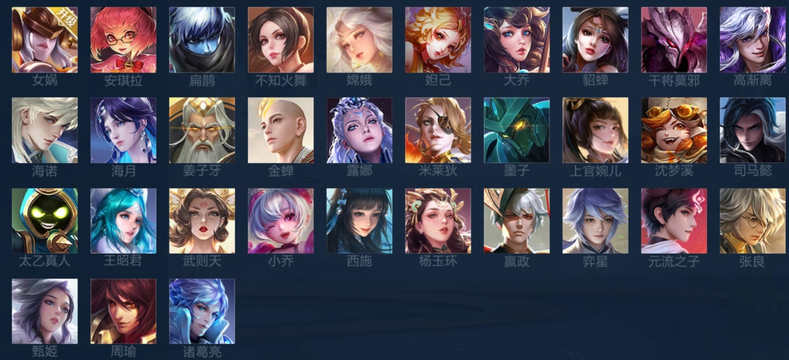
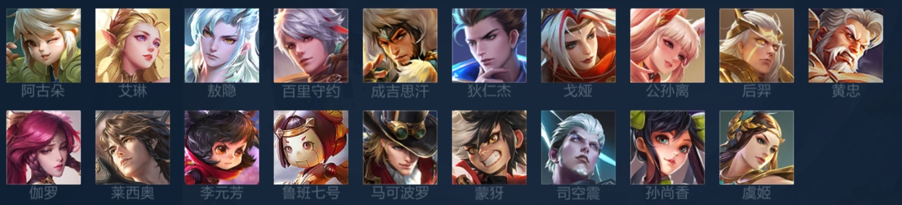
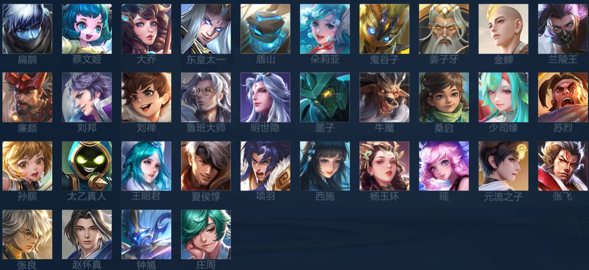

|  | |||||
| 王者简介 | 游戏背景 | 皮肤介绍 | 返回主页 | ||
|  | |
| 在王者荣耀里，对抗路有以下作用。 它是队伍的重要战线之一。对抗路玩家需要在前期独自面对敌方对抗路英雄，通过对线技巧获取优势，比如抢夺河道之灵来积累经济经验。 可以起到带线牵制的作用。优秀的对抗路玩家能在合适时机把兵线带向敌方防御塔，迫使对方派人回防，从而为队友创造以多打少的机会，像在敌方多人在中路抱团时，对抗路英雄就可以把兵线带到敌方对抗路二塔，让对方进退两难。 作为前排吸收伤害。许多对抗路英雄是坦克或者战士，在团战中能承受敌方大量伤害，为己方输出位创造良好的输出环境，像程咬金开启大招吸收伤害后，能让己方的射手和法师更安全地输出。 |
 |
| 在王者荣耀中，打野是团队的节奏核心。 打野的首要作用是控制野区资源。通过击杀野怪来获取经济和经验，保持自身发育。比如击杀红、蓝buff能获得对应的增益效果，红buff可以让普攻对敌人造成减速和灼烧伤害，帮助抓人；蓝buff可以加快技能冷却和回蓝，提升持续作战能力。 打野还要带动全场节奏。他们需要在合适的时机去各路支援，帮助队友击杀敌人，形成线上优势。例如，当看到对抗路队友和敌方对拼时，及时支援可以实现以多打少。 并且，打野在团战中发挥关键输出或者控制作用。一些打野英雄有很强的爆发输出，如娜可露露，能够在团战中瞬间打出高额伤害，切敌方后排；还有的打野有控制技能，如赵云的大招可以击飞敌人，为队友创造输出环境。 |
 |
| 在王者荣耀里，中路是非常关键的位置。 中路兵线到达的时间比其他分路快，所以中路英雄能更快地清理兵线。清完兵线后就可以去支援其他线路，帮助队友建立优势，像婉儿四级之后可以快速支援上下路，配合队友完成击杀。 中路还能提供控制和输出。许多中路英雄技能范围广、伤害高，在团战中是主要的输出力量。例如妲己，一套技能能瞬间打出高额伤害秒掉敌方脆皮。同时，部分中路英雄还有控制技能，如王昭君的冰冻，可以为队友创造良好的输出环境。 而且，中路是地图的中心区域，需要帮助打野守护野区。当中路玩家发现敌方入侵野区时，可以快速支援打野，阻止敌方抢夺野区资源。 |
 |
| 发育路英雄在团战中提供持续输出。射手的攻击距离一般比较远，在团队作战时能在相对安全的位置进行输出，为团队打出大量伤害。并且，发育路英雄可以对防御塔进行有效压制。借助手长的优势，能够远距离磨塔，推进比赛节奏，为团队获取更多地图资源。 |  |
| 在王者荣耀中，游走（辅助）位置有诸多关键作用。 游走英雄能保护队友。他们会紧跟己方核心输出位，利用自身的控制技能或者护盾技能，防止敌方刺客等切入英雄对己方输出进行击杀。比如蔡文姬，可以用二技能控制敌人，并且用大招为队友提供高额回血，让己方输出有更好的生存环境。 他们还能提供视野。辅助通过在草丛放置视野之灵或者自身探查草丛，提前发现敌方英雄的位置，为队友减少被埋伏的风险。像张飞，在游走过程中可以用技能探测草丛，避免己方队友被抓。 游走英雄也能开团。一些游走英雄具有强大的先手控制技能，能在团战开启之际控制住敌方多名英雄，为己方创造输出机会。例如，牛魔可以使用大招击飞敌人，让己方队友顺利打出伤害。同时，游走也可以用于拉扯敌方阵容，通过控制和走位使敌方聚集或分散，打乱敌方节奏。 |
 |